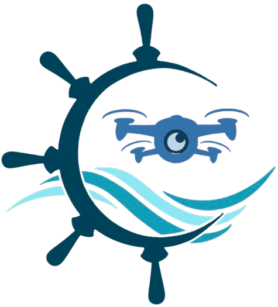

Field Robotics and Learning Group
Our group is dedicated to advancing autonomous systems across field research in three core areas: Reliable Sensing and Perception, Intelligent Planning and Decision Making, and Advanced Robust Control. Our mission is to develop resilient technologies that enhance system reliability by integrating sophisticated sensing, perception, and adaptive control frameworks. By leveraging the latest advances in machine learning, optimization, and control theory, we address real-world challenges, enabling autonomous platforms to navigate and operate effectively in complex, dynamic environments.
news
| Mar 18, 2025 | 🌊 Data Acquisition in River Thames |
|---|---|
| Feb 28, 2025 | 📃 New Applied Ocean Research published by UCL and Loughborough University |
| Dec 04, 2024 | Dr. Yuanchang Liu delivers a talk at RiTA 2024 Conference |
| Nov 28, 2024 | 📰🎉 Our ALADDIN demonstrator project was featured in the Lloyd's Register Foundation newsletter! |
| Nov 25, 2024 | Dr. Yuanchang Liu is appointed to the Editorial Board of Applied Ocean Research |
| Nov 05, 2024 | Delivered the first workshop for our Clean Maritime Project funded by MarRI-UK |
| Nov 01, 2024 | Kicked off an Innovate UK Smart Shipping Acceleration Fund funded project |
| Oct 14, 2024 | FRLG @ IROS 2024! |
| Oct 01, 2024 | The group welcomed two new members, Yang Hu and Junfeng Xue, to join! |
| Sep 23, 2024 | Paper published to Ocean Engineering by Yongchang Xie |
| Aug 21, 2024 | PhD defense by Meriem Ben Miled |
| Jul 18, 2024 | 🛠📋 UCL Festival of Engineering 2024 |
selected publications
- T-ASE
 An End-to-End Deep Reinforcement Learning Based Modular Task Allocation Framework for Autonomous Mobile SystemsIEEE Transactions on Automation Science and Engineering, 2024
An End-to-End Deep Reinforcement Learning Based Modular Task Allocation Framework for Autonomous Mobile SystemsIEEE Transactions on Automation Science and Engineering, 2024 - AAAS
 Adaptive Unsupervised Learning-Based 3D Spatiotemporal Filter for Event-Driven CamerasResearch, 2024
Adaptive Unsupervised Learning-Based 3D Spatiotemporal Filter for Event-Driven CamerasResearch, 2024 - IROS
 ShorelineNet: An Efficient Deep Learning Approach for Shoreline Semantic Segmentation for Unmanned Surface Vehicles2021 IEEE/RSJ International Conference on Intelligent Robots and Systems (IROS), 2021
ShorelineNet: An Efficient Deep Learning Approach for Shoreline Semantic Segmentation for Unmanned Surface Vehicles2021 IEEE/RSJ International Conference on Intelligent Robots and Systems (IROS), 2021 - T-ASE
 Anisotropic GPMP2: A Fast Continuous-Time Gaussian Processes Based Motion Planner for Unmanned Surface Vehicles in Environments With Ocean CurrentsIEEE Transactions on Automation Science and Engineering, 2022
Anisotropic GPMP2: A Fast Continuous-Time Gaussian Processes Based Motion Planner for Unmanned Surface Vehicles in Environments With Ocean CurrentsIEEE Transactions on Automation Science and Engineering, 2022 - Applied Ocean
 Image segmentation in marine environments using convolutional LSTM for temporal contextApplied Ocean Research, 2023
Image segmentation in marine environments using convolutional LSTM for temporal contextApplied Ocean Research, 2023 - Oceans Engineering
 Reliable LiDAR-based ship detection and tracking for Autonomous Surface Vehicles in busy maritime environmentsOcean Engineering, 2024
Reliable LiDAR-based ship detection and tracking for Autonomous Surface Vehicles in busy maritime environmentsOcean Engineering, 2024